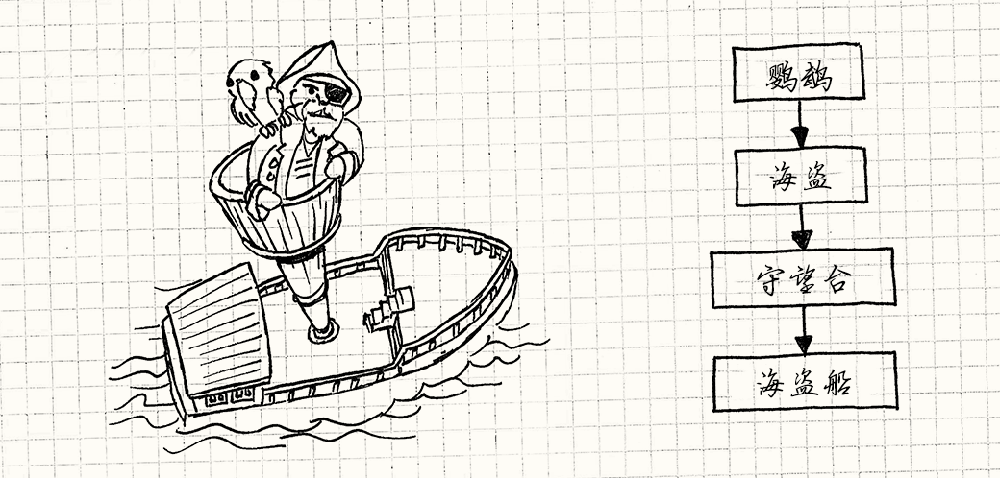
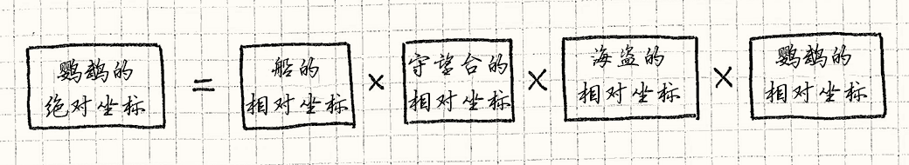
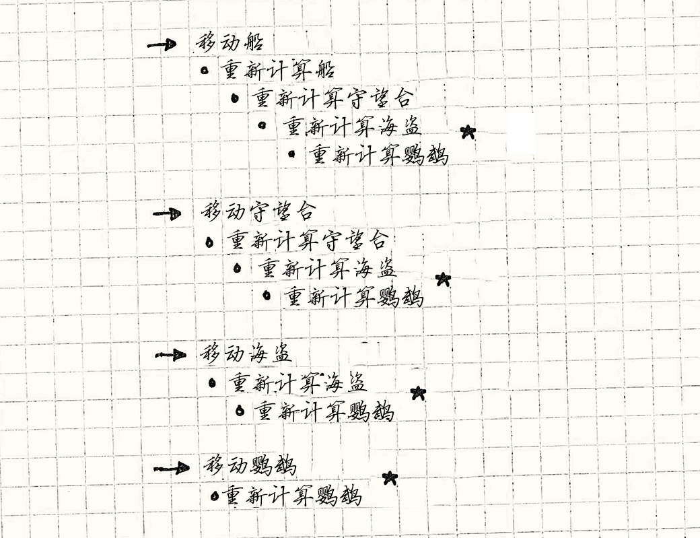
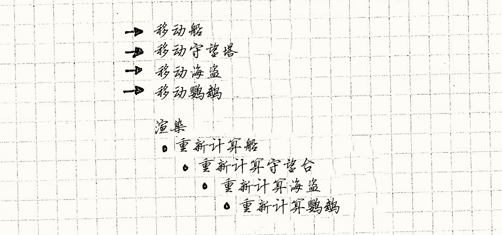

Dirty Flag
Game Programming PatternsOptimization Patterns
意图
将工作延期至其结果需要时才去执行，避免不必要的工作。
动机
很多游戏有场景图。 那是一个巨大的数据结构包含了游戏世界中所有的对象。 渲染引擎使用它决定在屏幕哪里画东西。
最简单的实现中，场景图只是对象列表。 每个对象都有模型，或者其他的原始图形，以及转换。 转换描述了对象的在世界中的位置，方向，拉伸。 为了移动或者旋转对象，我们只需简单地改变它的转换。
当渲染系统描绘对象，他取出对象的模型，对其使用转换，然后将其渲染到游戏世界中。 如果我们有场景包而不是场景图，那就是这样了，生活就很简单。
但是，大多数场景图都是有等级的。 图像中的对象也许拥有它锚定的父对象。 这种情况下，它的转换与其父对象的位置相关，不再是游戏世界上的绝对位置。
举个例子，将游戏世界想象为海上的海盗船。 桅杆的顶端是瞭望塔，瞭望塔中的是海盗，海盗肩上是鹦鹉。 船本身的转换定位船在它上的位置。瞭望塔的转换定位它在船上的位置，诸如此类。

这样的话，当父对象移动时，他的孩子节点也自动的跟着他移动。 如果我们改变了船本身的转换，瞭望塔，海盗和鹦鹉都会随之移动。 如果当船移动时，我们就得手动调整每个对象来保持它们不滑出去，那可相当令人头疼。
但是为了在屏幕上真正的描绘鹦鹉，我需要知道它在世界上的绝对位置。 我会调用父节点相关的转换对象的自身转换。 为了渲染一个对象，我需要知道它的世界转换。
自身转换和世界转换
计算对象的世界转换很直接——从它的父节点一直追踪到对象，将经过的所有转换绑在一起。 换言之，鹦鹉的世界转换如下：

我们每帧需要为游戏世界的每个对象做世界转换，因此哪怕每个模型只有一部分矩阵乘法，当性能攸关时，它也在热点代码路径上。 保持它们更新是有技巧的，因为当父对象移动时，它影响自己的世界转换，并递归影响所有孩子节点。
最简单的方法是在渲染时计算转换。 每一帧，我们从最高层递归遍历整个场景图。 对每个对象我们计算它的世界转换然后绘制它。
但这完全是在浪费CPU！ 很多游戏世界的对象不是在每帧都移动。 想想那些构成关卡的静态几何图形。 在没有改变的情况下每帧计算他们的世界转换是一种浪费。
缓存世界转换
明显的答案是缓存它。 在每个对象中，我们存储他的自身转换和世界转换。 当我们渲染时使用预计算的世界转换。 如果对象从未移动，缓存的转换永远跟得上变化，每个人都很开心。
当一个对象确实移动了，简单的解决方式是之后就更新世界转换。 但是不要忘记层次性！当父节点移动时，我们得计算它的世界转换以及递归计算它所有的子对象。
想象一些游戏中忙碌的时刻。 在一帧中，船在海上颠簸，瞭望塔在风中摇晃，海盗甩到了边缘，而鹦鹉撞上了他的脑袋。 我们改变了四个自身转换。如果每次自身转换都立即更新世界转换，会发生什么？

我只移动四个对象，但我们做了十个世界转换计算。 那就有六个在被渲染器使用前浪费了。 我们计算了鹦鹉的世界转换四次，但它只需渲染一次。
问题在于世界转换也许会依赖于多个自身转换。 由于我们每次转换变化就立即重新计算，当自身转换依赖的多个世界转换同一帧发生变化时，我们就对同一转换做了多次重新计算。
延期重计算
我们会通过解耦自身转换和世界转换的更新来解决这个问题。 这让我们先在一次批处理中改变自身转换，在这些改变完成之后，在我们需要渲染它之前，重新计算它们世界转换。
为了做到这点，我们为图中的每个对象添加标识位。 “标识”和“位”在编程中密切相关——都代表一小块处在两种状态之一的数据。 我们称之为“真”和“假”，或者有时“设置”和“清除”。 我之后会交替使用它们。
当自身转换改变了，我们设置它。 当我们需要对象的世界转换时，我们检查这位。 如果它被设置了，我们计算世界转换然后清除标识。 那个标识代表着，“世界转换过时了吗？” 由于它们没有清除，这种“过时的杂乱”被称为“脏”。 也就是脏标识。“脏位”也是这模式通常使用的名字，但是我决定使用不那么下流的称呼。
如果我们应用这一章，然后移动之前例子中所有对象，那么游戏最终是这样的：

这就是你能希望得到的最好结果了——每个受到影响的对象的世界转换只被计算一次。使用仅仅一位数据，这个模式为我们做了以下事情：
-
它将对象的父节点链上的众多自身转换变化归并成对象上的一次计算。
-
它避免了在没有移动的对象上重新计算。
-
还有一个小小的意外收获：如果对象在渲染前被删除了，不必再计算它的世界转换。
模式
一组原始数据随着时间变化而改变。 使用昂贵的过程推定一组导出数据。 一个“脏”标识追踪导出数据是否与原始数据保持一致。 它在原始数据改变时被设置。 否则的话，使用之前的缓存的导出数据。
何时使用
与这本书中的其他模式相比，这一个解决了一个非常特殊的问题。 同时，就像其他优化一样，只在有足够大的性能问题时，再使用这一章增加代码复杂度。
脏标识在两种任务上应用：“计算”和“同步”。 在两种情况下，从原始数据转换到导出数据消耗很多时间，或者有其他方面的消耗。
在我们的场景图例子中，这个过程非常缓慢是因为需要执行很多数学运算。 为了同步使用这个章节，是另一个应用场景， 更常见的是导出数据在别的地方——在磁盘上或者在网络另一头的终端机上——从点A到点B消耗很大。
这里是一些其他应用场景：
-
原始数据的变化速度远高于导出数据的使用速度。避免在导出数据使用前原始数据多次变化带来的不必要计算。如果你发现总在原始数据变化后使用导出数据，这个模式无法帮忙。
-
增量更新应该是困难的。假设我们海盗船只能携带特定数量的战利品。我们需要获取带着的每件事物的总重量。我们可以使用这个模式，然后为总重量设脏标识。每次我们添加或者移除一些战利品，我们设置这个标识。当我们需要总量，我们将所有战利品重量加起来然后清除标识。
但是一个更简单的解决方法是保持计算总量。当我们添加或删除事物，直接从现在的总重量添加或者删除它的重量。如果我们可以承担得起消耗，保持导出数据更新，那么更好的选择是不用这个模式，每次需要时重新计算导出数据。
这听起来脏标识很少使用，但你会找到一两个部分它能帮得上忙。 直接在你的游戏代码库中搜索“dirty”，通常会发现使用这个模式。
记住
哪怕是在我们说服自己这个模式在这里很恰当之后，这里还有一些东西可能会让你不舒服。
延期太久是有代价的
这个模式将缓慢的工作延期到结果真正需要的时候，但是当它要的时候，通常是现在就要。 但是我们使用这个模式的原因是计算结果很慢！
在我们的例子中，这不是问题，因为我们还是可以在一帧之内计算世界坐标，但是可以想象其他情况下，工作需要可观时间来进行。 如果玩家想要结果时才开始计算，这会引起不愉快的可见暂停。
另一个延期的问题是，如果有东西出错了，你也许根本做不了事情。 想要将模式存储为固定模式也许会造成问题。
举个例子，文本编辑器知道你的文档有“没保存的改变”。 在你文件标题栏的小点或者星号就是可见的脏标识。 原始数据是在内存中打开的文档，推导数据是在磁盘上的文件。

很多程序直到文档关闭或者应用退出才保存到磁盘上。 在大多数情况下这很好，但是如果你一不小心踢到了插线板，你的主要工作也就随风而逝了。
在后台自动保存备份的编辑器是这一失误的补偿。 自动保存的频率保持在崩溃时不丢失太多数据和不总是打扰文件系统保存文件之间。
每一次状态改变你都得保证设置标识。
由于推导数据是从原始数据推导而来的，它实际上是缓存。 无论何时你缓存了数据，都是需要保证缓存一致性——在缓存与它原本数据不同步时通知之。 在这个模式上，这意味着在任何原始数据变化时设置脏标识。
一处遗漏，你的程序就使用了不正确的推导数据。 这引起了玩家的困惑和非常难以追踪的漏洞。 当你使用这个模式时，你也得注意，任何修改了原始数据的代码都得设置脏标识。
一种解决它的方法是将原始数据的修改隐藏在接口之后。 任何想要改变状态的代码都要通过一个API，你可以在那里设置脏标识来保证不会遗漏。
你得将之前的推导数据保存在内存中。
当推导数据被请求而脏标识没有设置，它使用之前计算出的数据。 这很明显，但这需要你在内存中保存推导数据，以防之后你需要再次使用。
如果你没有使用这个模式，你可以在需要时计算推导数据，然后在完成后释放。 这避免了每次计算后都将其存储回内存的代价。
就像很多优化一样，这种模式以内存换速度。 通过在内存中保存之前计算的结果，你避免了在它没有改变的情况下重新计算。 这种交易在内存便宜而计算昂贵时是划算的。 当你手头有更多空闲的时间而不是内存的时候，最好按需求重新计算之。
示例代码
假设我们满足了出奇长的需求列表，看看模式在代码中是如何应用的。 就像我之前提到的那样，矩阵变换背后的数学超出了本书的范围，因此我将其封装在类中，假设在其他某处已经实现了：
class Transform { public: static Transform origin(); Transform combine(Transform& other); };
这里我们唯一需要的操作就是combine()，
这样我们可以将父节点链上所有的自身转换组合起来获得对象的世界转换。
同样有办法来获得“原先”的转换——通常是一个身份矩阵，没有平移，旋转，或者拉伸。
下面，我们勾勒出场景图中的对象类。这是在应用模式之前，需要的最低限度的东西。
class GraphNode { public: GraphNode(Mesh* mesh) : mesh_(mesh), local_(Transform::origin()) {} private: Transform local_; Mesh* mesh_; GraphNode* children_[MAX_CHILDREN]; int numChildren_; };
每个节点都有原始转换描述了它和父节点之间的关系。
它有对象的真实网格。（将mesh_置为NULL来处理用来组织子节点的不可见节点。）
最终每一个节点都有一个可能为空的子节点集合。
通过这样，“场景图”只是简单的GraphNode，它是所有的子节点（以及孙子节点）的根。
GraphNode* graph_ = new GraphNode(NULL); // Add children to root graph node...
为了渲染场景图，我们需要的就是遍历节点树，从根开始，然后使用正确的世界变换为每个节点的网格调用函数：
void renderMesh(Mesh* mesh, Transform transform);
我们不会直接在这里实现，但是如果我们这么做了，那么它就会做渲染需要的事，将网格绘制在世界上给定的位置。 如果对场景图中的每个节点都正确有效地调用，我们就愉快的完成了。
一个没有优化的遍历
为了把手弄脏，我们做一个简单的遍历，在渲染需要的时候去计算所有的位置。
这没有优化，但它很简单。我们添加一个新方法给GraphNode：
void GraphNode::render(Transform parentWorld) { Transform world = local_.combine(parentWorld); if (mesh_) renderMesh(mesh_, world); for (int i = 0; i < numChildren_; i++) { children_[i]->render(world); } }
我们使用parentWorld将父节点的世界转换传入节点。
这样，需要获得这个节点的世界转换只需要将其和节点本身转换相结合。
我们不需要向上遍历父节点去计算世界转换，因为我们可以在向下遍历时计算。
我们计算了节点的世界转换然，将其存储到world，如果有的网格，渲染它。
最后我们遍历进入子节点，传入这个节点的世界转换。
无论如何，这是一个紧密的，简单的遍历方法。
为了绘制整个场景图，我们从根节点开始整个过程。
graph_->render(Transform::origin());
让我们变脏
所以代码做了正确的事情——它在正确的地方渲染正确的网格——但是它没有有效地完成。
它在途中的每个节点上每帧调用local_.combine(parentWorld)。
让我们看看这个模式是如何修复这一点的。首先，我们给GraphNode添加两个字段。
class GraphNode { public: GraphNode(Mesh* mesh) : mesh_(mesh), local_(Transform::origin()), dirty_(true) {} // Other methods... private: Transform world_; bool dirty_; // Other fields... };
world_字段缓存了前一个计算出来的世界转换，和dirty_字段，当然，脏标识。
注意标识初始为true。当我们创建新节点的时候，我们还没有计算出它的世界转换。
初始时，它与自身转换不是同步的。
我们需要这个模式的唯一原因是对象可以移动，因此让我们添加对这点的支持：
void GraphNode::setTransform(Transform local) { local_ = local; dirty_ = true; }
这里重要的部分是设置脏标识。我们忘了什么事吗？是的——子节点！
当父节点移动时，它所有的子节点的世界坐标也改变了。 但是这里，我们还没有设置它们的脏标识。 我们可以那样做，但是要递归而且缓慢。我们可以在渲染时做点更聪明的事。让我们看看：
void GraphNode::render(Transform parentWorld, bool dirty) { dirty |= dirty_; if (dirty) { world_ = local_.combine(parentWorld); dirty_ = false; } if (mesh_) renderMesh(mesh_, world_); for (int i = 0; i < numChildren_; i++) { children_[i]->render(world_, dirty); } }
这与原先的原始实现很相似。
关键改变是我们在计算世界转换之前去检查节点是不是脏的，然后将结果存在字段中而不是本地变量中。
如果节点是干净的，我们完全跳过了combine()使用了老的但是正确的world_值。
这个聪明的位是dirty参数。
如果父节点链上有任何节点是脏的，那么就是true。
当我们顺着层次遍历下来，parentWorld用同样的方式更新它的世界转换，dirty追踪父节点链的是否有脏。
这让我们避免递归地调用setTransform()标注每个子节点的dirty_标识。
相反，我们将父节点的脏标识传递给子节点，然后看看我们是否需要重新计算它的世界转换。
这里结果正是我们需要要的：改变节点的自身转换只是一些声明，渲染世界时只计算从上一帧开始所需的最小数量的世界转换。
设计决策
这种模式非常具体的，所以只有几个旋钮来摆弄：
什么时候清空脏标识？
-
当结果被请求时？
-
如果不需要结果，可以完全避免计算。如果原始数据变化的速度比推导数据获取的速度快的多，这可以是很大的胜利。
-
如果计算消耗大量时间，这会造成可察觉的暂停。将工作推迟到玩家想要结果的时候会严重影响游戏体验。这部分工作一般足够快，不会构成问题，但是如果构成问题，你就需要早一些做这些工作。
-
-
在好好定义的检查点处：
有时候，某个时间点或在游戏过程中很自然的需要推迟处理。例如，我们只有海盗驶入港口才会去保存游戏。如果同步点不是游戏的机制，我们将这些工作隐藏在加载画面或者过程动画之后。
-
做这种工作不会影响到玩家体验。不像前一个选项，游戏在紧张运行时，你总能转移玩家的注意力。
-
会丧失何时工作的控制权。这是和前一个选项相反。你在进行的时候能微观控制，确保有效优雅的处理它。
你不能做的是保证玩家真的到了检查点或者满足了你定义的条件。如果他们在游戏中迷失了，或者游戏进入了奇怪的状态，你最终会将工作推迟到晚的超乎预料。
-
-
在后台处理：
通常情况下，你为每个更改启动固定间隔的计时器，然后在计时器到时间后处理间隔中的所有变化。
-
可以控制工作进行的频率。通过调节计时器，你可以保证它发生的像你预期一样频繁（或者不频繁）。
-
更多冗余工作。如果原始状态在计时器运行之间只改变了很少的部分，最终你处理的大部分都是没有改变的数据。
-
需要同步支持工作。 在“后台”处理数据意味着玩家可以同时继续做正在做的事情。这就意味着你将会需要线程或者其他并行支持，这样游戏在处理数据的同时仍然可以继续游玩。
由于玩家很可能与你处理中的状态交互，你也需要考虑保持同步修改的安全。
-
你的脏追踪做的有多细粒度？
假设我们的海盗游戏允许玩家建造并个性化他们自己的船。 船在线自动保存，这样玩家可以从他们离开的地方继续。 我们使用脏标识记录船的哪块甲板被修改了，从而需要发送到服务器。 每一块我们发送给服务器的数据都包括了修改的船数据和一些描述船的哪里被修改的元数据。
-
如果粒度更细：
假设你为甲板上的每个小木板都拍上一个脏标识。
- 你只需处理真正改变的数据。你只处理船上修改了的数据到服务器。
-
如果粒度更粗：
或者，我们可以每层甲板关联一个脏标识。改变它上面的任何东西都会让整个甲板变脏。
-
最终需要处理没有变化的数据。在甲板上添加一个桶，就要将全部的东西发送到服务器。
-
更少的内存被用在存储脏标识上。为甲板上添加十个桶只需要一位来追踪。
-
较少的时间花在固定开销上。当处理某些改变的数据时，通常处理数据之前有些固定的工作。在这个例子中，是需要确认船上改变的数据在哪里的元数据。你处理的块越大，那么要处理的数量就越少，这就意味着有更小的开销。
-
参见
-
这个模式在游戏之外的像Angular的浏览器方向框架，是很常见的。它们使用脏标识来追踪哪个数据在浏览器中被改变了，需要将数据推向服务器。
-
物理引擎追踪哪些对象在运动中哪些在休息。由于休息的骨骼直到有力施加在上面才会移动，它们被碰到才会需要处理。这种“正在移动”的位是一个脏标识，标注哪个对象上面有力施加，需要物理解析。